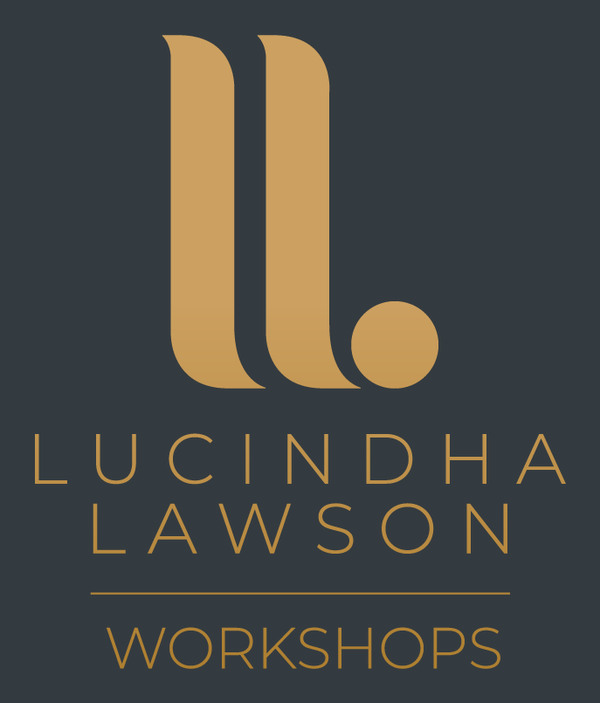

Community Work
Workshops
Interactive workshops that build confidence, inclusion and practical understanding.
Every workshop is designed to be engaging, practical and tailored to the needs of your organisation. Drawing on my lived experience as a Deaf person, international athlete and graduate accountant, I create sessions that encourage participation, discussion and meaningful learning.

Workshop topics
Workshops are available for schools, businesses, charities, sports organisations and community groups. Each session can be tailored to your audience, organisation and learning objectives.
Deaf Awareness & Deaf Culture
Helping participants understand Deaf culture, communication, accessibility and how to create more inclusive environments.
Introduction to British Sign Language (BSL)
A practical introduction to everyday British Sign Language, basic signs and more confident communication with Deaf people.
Language Deprivation in Deaf Children
Exploring the lifelong impact of language deprivation and why early access to language is essential for Deaf children's development.
Mental Health in the Deaf Community
Raising awareness of mental health, wellbeing and the unique challenges faced by Deaf people in accessing support.
CPR & AED Awareness for Deaf Communities
Raising CPR and AED awareness, exploring Deaf-friendly accessibility and building confidence around responding to emergency situations.
Long QT Syndrome & Deafness Awareness
Drawing on lived experience to raise awareness of Long QT syndrome and deafness, including the importance of recognition, accessible communication and appropriate support.
Supporting Deaf Children in Care
Helping foster carers, social workers and professionals better understand the communication, identity and wellbeing needs of Deaf children in care.
Inclusion & Accessibility in Practice
Providing practical strategies to improve accessibility, communication and inclusion in workplaces, schools and community settings.
Creating Deaf-Friendly Schools, Workplaces & Communities
Supporting organisations to build welcoming environments where Deaf people can participate, communicate and thrive.
How workshops work
Every workshop can be adapted to suit your organisation, participants and learning objectives. Sessions are designed to encourage discussion, participation and practical learning rather than simply listening to a presentation.
- Tailored to Your Audience – No two organisations are the same. Content can be adapted for schools, businesses, charities, sports organisations, professionals and community groups.
- Interactive & Practical – Learning through participation. Workshops can include activities, discussions, scenarios, questions and practical exercises, depending on the topic and audience.
- Accessible Communication – Accessibility is built into the session. Workshops are designed with accessibility in mind, using clear visual communication and appropriate communication arrangements agreed when booking.
- Flexible Delivery – Designed around your organisation. Sessions can be tailored in length, group size and format, with requirements agreed in advance to make the workshop appropriate for your audience.
Bring a workshop to your organisation?
Whether you are a school, business, charity, sports organisation or community group, I’d be delighted to discuss a workshop tailored to your audience and learning objectives. Sessions can be tailored by topic, audience, group size and format, and accessibility requirements can be discussed as part of the booking process.
Workshops are available for:
- Schools and colleges
- Businesses and workplaces
- Charities and community organisations
- Sports clubs and governing bodies
- Foster carers and social care professionals
- Conferences and professional development events